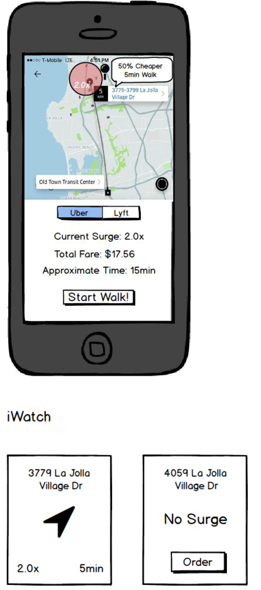

Task & Domain:
My idea is to help people visualize surge regions around them before they order Uber so that they can save a lot of money rather than pay extra money for surging price. They have two choices: first is to wait at current location until price drops down. Second is to walk to a near location with low surge. For the second choice, they can use iWatch to help navigate.
video:
prototype:
